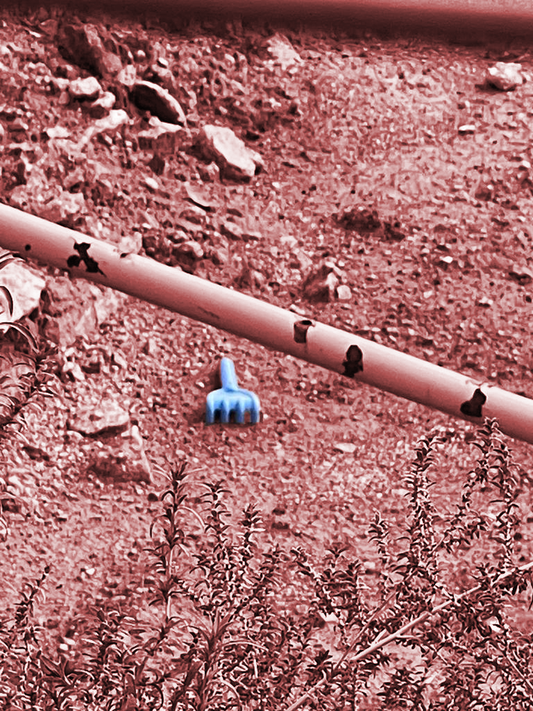
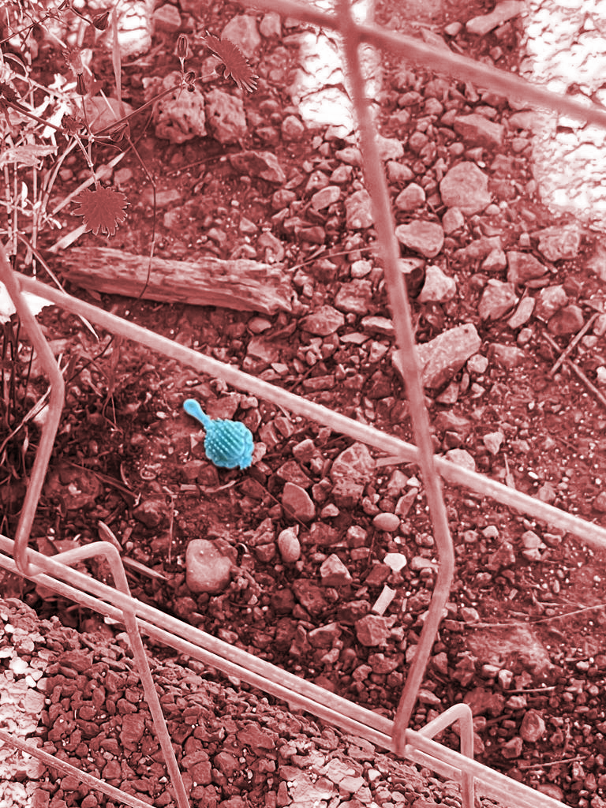
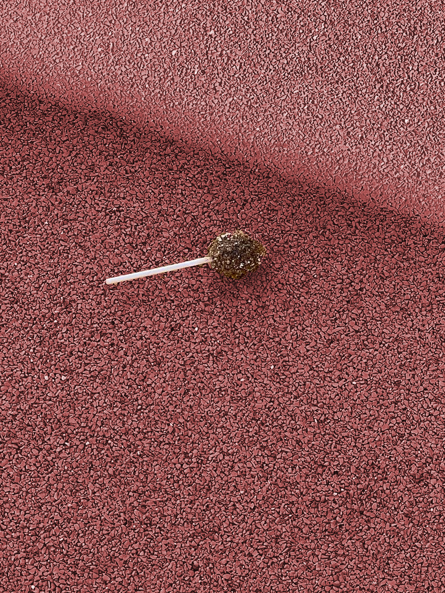
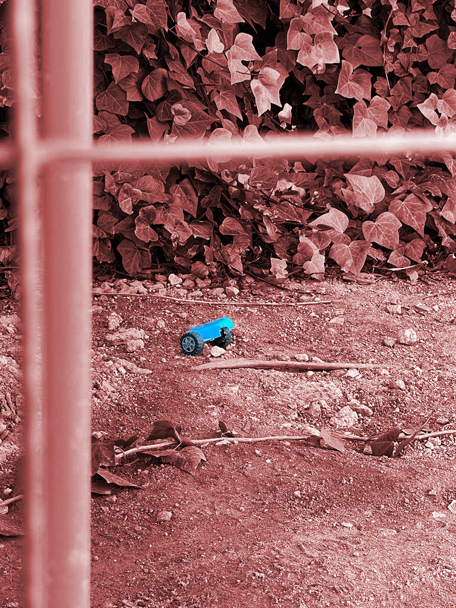

Design With Others¶
WHAT’S A COMMUNITY? COLLECTIVE OF THINGS/BEINGS, complex formation of elements
Paradoxes of SOIL AND LAND (FOOD AND HOUSING) SOIL as nature cultural system, more than human community, sub-human LAND as sociotechnical system, micro and macro natural system, creative arena FROM MICRO TO MACRO (perpetual shifting) LOCAL SYMPTOMS, COMMUNITIES AND SITUATED RESEARCH → SYSTEMIC, MACRO-long TERM INTERVENING UNDERSTANDING, CONNECTING, INTERVENE
DAY 1, SOIL¶
ASSAMBLAGES→ Assemblages are composed of heterogeneous elements or objects that enter into relations with one another. These objects are not all of the same type. Thus you have physical objects, happenings, events, and so on, but you also have signs, utterances, and so on. While there are assemblages that are composed entirely of bodies, there are no assemblages composed entirely of signs and utterances.
ASSEMBLAGES OF SOIL-> Mix of microorganisms (or issues of waste) connecting elements issues ,logistics, infrastructures ,
As a first activity, they ask us to go around and take picture on what for us could be a friction,conflict or tension in soil. During my research hour i’ve noticed that in that specif area, (close to a playground) that there were a lot of toys leave by the children. i’ve reflected on the fact that children, unlike the others, don’t “trought” away something on the ground and leave it on purpose: their intentions are pure (as a angel generation) and they also use the soil as their fantasy playgrond.
   
Back from the activity, i found my affinity group sharing the concept of AGEISM
AFTERNOON ACTIVITY¶
Build a systemic view of your territory
- Stakeholder mapping and analyze the context through an holistic diagnosis
- Ensure the alignment of your internal team vision for circular transitions and be aware of constraints and differences
Assess your community
- Engage the community through canvassing, door knocking, and participating in community events.
- Understand the barriers of sharing power and/or access that prevents diverse co-creators from coming and working together
- Address those barriers and include their voices. It takes work and it is hard, but the output will be stronger.
DISTRIBUTED DESIGN→ approach to design that goes from product in trash out to product in and out
Spread, thought data KNOWLEDGE (A COMMUNITY)
MAKER MOVEMENT→ working with design sensitivity

DAY 2, LAND¶
LA BORDA→ social housing, sharing spaces collaborative space (they collaborate to build the space and the utilities)
Freedom as exercising reciprocity (way of relating)


DAY 3 SOIL AND LAND (CONFLICT SPACE)¶
CONFLICT: How can we foster connectivity and inclusivity between communities that practice hands on techniques to create art and those who rely entirely on technology to do the same.
Card game¶
Instruction manual
Welcome to LD-50, the creative card game that combines personas, art forms, mediums, and challenges for a unique art experience. Unleash your creativity by selecting cards from each of the four categories and creating captivating art that pushes your boundaries.
Objective: Create a masterpiece by combining your chosen persona, art form, art medium & technique, and challenge.
Components: - Category 1 Cards (Persona): PimpMa, RealG, BastyQ, An^2A - Category 2 Cards (Art Form): Baroque, Street Art, Surrealism, Expressionism, Hyper-realistic - Category 3 Cards (Art Medium & Technique): Chinese Ink Calligraphy, Charcoal Art, Rangoli Art, Fabrication Machinery Usage - Category 4 Cards (Challenge): Create Art Blindfolded, Create Art with Your Wrong Hand, Create Art Without Lifting the Pen (One Flow Art), Switch Art Every 5 Mins with the Next Person
Characters
-
PimpMa: Hailing from the opulent regions of India and China, PimpMa is a master of hyperrealistic art and industrial design. Her keen listening skills make her a valuable collaborator, adding depth to her creative prowess.
-
RealG: Originating from the architecturally enchanting city of Barcelona, RealG embodies the perfect blend of street smarts and geek chic. Armed with a degree in digital art, she’s a true aficionado in the realms of technology and creativity.
-
BastyQ: A product of the rich cultural tapestry of China and the concrete jungle where dreams are made of in New York. BastyQ is equipped with a background in interior architecture and art history. Her expertise in design is paired with a deep understanding of historical aesthetics, making her a unique force in the creative landscape.
-
An^2A: Emerging from the delectable land of Italy, An^2A is a connoisseur of industrial product design with a notable history in art galleries. Her expertise spans both the functional and aesthetic aspects of design, creating a flavorful mix of innovation and artistic sensibility.
Setup: 1. Shuffle each category’s cards separately and place them face down. 2. Each player draws one card from each category to determine their unique combination.
Gameplay: 1. Once you have your combination of Persona, Art Form, Art Medium & Technique, and Challenge, it’s time to create your artwork. 2. Use the selected Persona’s style and personality to influence your artistic choices. 3. Apply the chosen Art Form to express your creativity. 4. Employ the selected Art Medium & Technique to bring your vision to life. 5. Confront the Challenge head-on while creating your artwork.
Scoring: - Artistic Expression: 1-10 points based on creativity and originality. - Persona Alignment: 1-5 points for how well your chosen persona is reflected in your art. - Challenge Completion: 1-5 points for successfully overcoming the chosen challenge.
Winning: The player with the highest total score at the end of the agreed-upon number of rounds or artworks is the Artistry Fusion champion!
Tips: - Embrace the unexpected combinations; they might lead to groundbreaking art. - Encourage players to share the stories behind their creations for added fun.
LD-50 is not just a game; it’s an exploration of your artistic boundaries. Unearth your inner artist, experiment, and enjoy the vibrant fusion of personas, art forms, mediums, and challenges!
Reflection¶
The design with others seminar was a very interactive and a seminar that was very eyeopening. The first day of this module began with an informative session about soil and the interesting concepts that revolve around the community. Seeing communities through a different lens was taught me the importance of the needs and desires of communities in the rural parts of Barcelona.
Discovering the community in the second half of first day allowed me to find out the artists community and the toy makers in the area. We (Me, Ana, Qian Yin and Manuja) had the opportunity to speak to an old artist and a toy maker called Juan. He shared with us his experience about being an old artist in the community that is slowly all becoming digital. We had the privilege to see his entire workspace and the tools he uses to create his masterpieces. This small interaction gave me the idea to work more in this field for the intervention through a creative way to depict art forms.
The second day of the seminar was more about walking around the community and we had the opportunity to go see the Holon housing and see their sustainable way of living. I personally believe that was very important to see first hand and get a first person perspective on living so sustainably. Upon having the seminar on hollow housing, we divided ourselves into groups and worked on our intervention.
Filling the different miro boards and going into the depth with the research of the community, was super helpful to narrow down the community area that we wanted to work within. As a group after having discussed the area that we wanted to focus on, we tried to come up with ideas to solve the issue. As a group we created a card game to bridge the gap between intergenerational artists and the different art forms and mediums.
Creating this game was not only a fun activity but it also allowed me to learn a lot about how I can creatively solve a deep issue so lightly. Overall, the design with others seminar taught me tremendously in depth of the importance of keeping in mind of communities while designing.